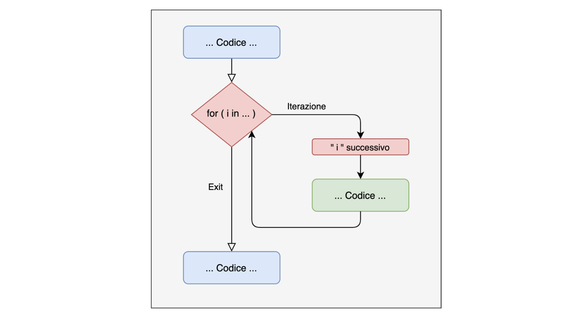
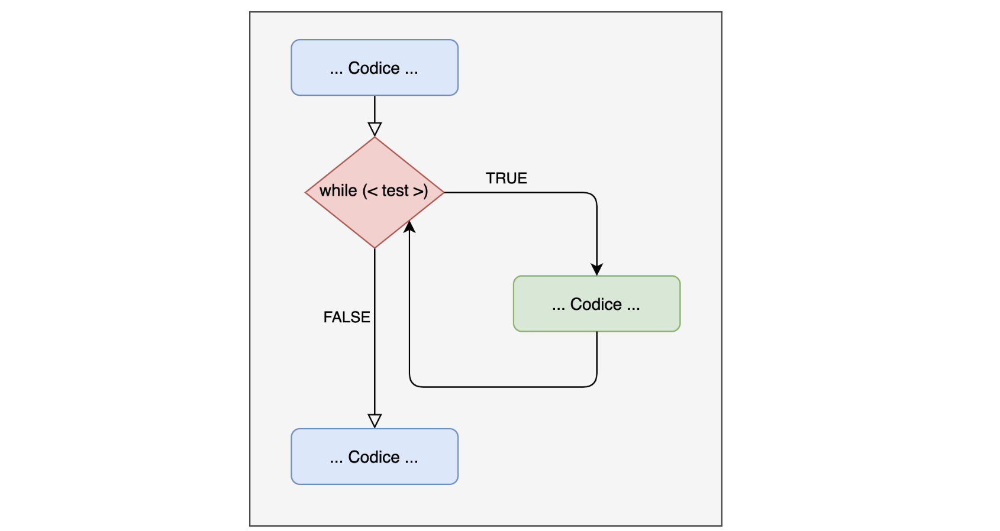
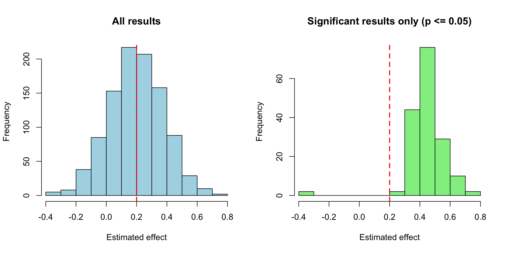

[1] 55The concept of iteration underlies any operation in programming languages. In R many operations are vectorized. This makes the language more efficient and cleaner BUT hides the concept of iteration.
For example, the sum() function lets us add up a vector of numbers.
But what is hidden underneath?
Example: if I ask you to use the print() function to write “hello world” in the console 5 times, how would you do it?
What we are missing (and what the sum() function does) is a way to repeat a given operation without actually repeating the code manually.
There are several constructs that let us repeat operations; the most used are:
The for loop
The while loop
The repeat loop
The *apply family
for loop
The for loop is a structure that lets us repeat a portion of code a finite, pre-determined number of times.
A for loop is written as:
If I want to print something 5 times, I can simply use a for loop:
for loopfor(){ }: this is the implementation in R (similar to the if statement)
i: this is called the iterator or index. It is a generic index that can take any value and name. By convention it is called i, j etc. It keeps track of the number of iterations our loop has to do
in <values>: this indicates the values the iterator will take inside the loop
{ # operations }: these are the operations the loop must perform
The power of the for loop lies in the fact that the iterator i takes the values of the vector specified after in, one at a time:
For with an index vs withoutwhile loopThe while loop uses a logical condition instead of an iterator and a range of values as in the for loop. The loop keeps going as long as the condition is TRUE:

Try writing this while loop, see what happens and understand why
The while loop is not pre-determined, so it always needs a way to be stopped, by making the condition false.
repeat loopThe logic of the repeat loop is very similar to that of the while loop, but with 3 important differences:
it always performs at least one iteration
it emphasizes repetition until a condition is met
it uses the break command to stop
repeat loopRoll the die until a 6 comes up:
repeat vs. whilerepeat evaluates the condition at the end of the iteration, while while does it at the beginning. If the condition is not TRUE at the start, while does not run, whereas repeat does:
sum() functionImagine we did not have the sum() function and wanted to recreate it: how would we do it? Any ideas?
Let’s break the sum down conceptually; we add up the numbers from 1 to 10:
I take the first one and add it to the second (total = 1 + 2)
I take the total and add it to the 3rd element: total = total + 3 …
In practice we have:
our vector to sum
a total object that progressively accumulates the previous sums
Let’s put everything inside a function (i.e., I create a function that replicates what the sum function does)
The for loop is also useful, for example, to simulate data. Suppose we have a variable y (income) that depends on age:
for loop, I simulate the variable y (income) assuming it depends on age_z (age):set.seed(111) # for reproducibility
niter = 1000
res_all = rep(NA, niter) # all estimated effects
p_val = rep(NA, niter) # all p-values
# Observed data
age_z = mydf$age_z
eff_age = .2 # age effect
n_obs = length(age_z)
for(i in 1:niter) {
y = 0 + eff_age * age_z + rnorm(n_obs, 0, 1) # always add some noise
# linear model
mod = lm(y ~ 1 + age_z)
# extract the effect estimate
res_all[i] = coef(mod)[2]
# p-value of age_z
p_val[i] = summary(mod)$coefficients[2, 4]
}Result:
Proportion significant = Power: 0.165 Mean of all effects: 0.1975066 Mean of significant effects: 0.4470989 
It is precisely thanks to the for loop that we can run a power simulation.
To learn more, have a look at this page! :)
for loopsOnce you understand the iterative structure, you can easily extend it by putting a loop inside another one:
Imagine we have two experimental groups (for example, a Control group and a Treatment group), each with 10 participants. We want to measure a variable (for example, reaction time) for each participant and record the results in a dataframe:
# Define the study parameters
groups = c("Control", "Treatment") # Group names
n_subj=10 # Number of subjects per group
tot_subj = n_subj * length(groups)
# Create a data.frame to store the data
res=data.frame(
# Group factor
Group = factor(x = rep(groups, each = n_subj)),
# Subject factor
Subject = factor(x = 1:tot_subj),
# Reaction time: numeric vector with rt = 0
RT = numeric(tot_subj)
)# Nested loop to simulate data collection
set.seed(42) # For reproducibility of the simulated data
k = 1 # reaction time iterator
# how many levels does Group have?
for (i in 1:length(levels(res$Group))) {
# start with the first group, which is the control group
group = levels(res$Group)[i]
for (j in 1:n_subj) { # n_subj for each group
# is it the control group?
RT = ifelse(group == "Control",
yes = rlnorm(1, mean = log(.500), sd = .050),
no = rlnorm(1, mean = log(.450), sd = .050))
res$RT[k] = RT
k = k + 1
}
}'data.frame': 20 obs. of 3 variables:
$ Group : Factor w/ 2 levels "Control","Treatment": 1 1 1 1 1 1 1 1 1 1 ...
$ Subject: Factor w/ 20 levels "1","2","3","4",..: 1 2 3 4 5 6 7 8 9 10 ...
$ RT : num 0.535 0.486 0.509 0.516 0.51 ... Group Subject RT
1 Control 1 0.5354760
2 Control 2 0.4860800
3 Control 3 0.5091611 Group Subject RT
18 Treatment 18 0.3940291
19 Treatment 19 0.3983075
20 Treatment 20 0.4807047[1] 0.5142776[1] 0.4476666
Open this link and keep it open: